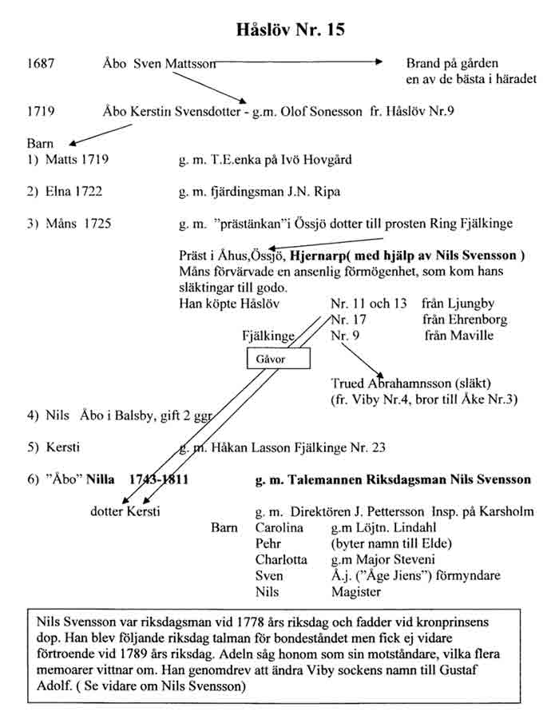

|
HÅSLÖV 15 |
|||||||||||||||||||||||||||||||||||||||||||||||||||||||||||||||||||||||||||||||||||||||||||||||||||||||||||||||||||||||||||||
|
Inledning till dokumentationen av Håslöv 15
Dokumentationen som helhet av Håslöv 15 består av dokumenten; Riksdagsman Nils Svensson, ”Mejeristen”, Egna Hem och Egnahemsrörelsen, Brödarundan samt Håslöv 15-bor under olika epoker. Genom att integrera dokumentationen Gatehus Håslöv 10-12, kommer också grannarna ”andra sidan Stora vägen”, att belysas.
Dokumentationen avser att spegla storlek, betydelse och ägandeförhållanden för huvudfastigheten genom åren. Hur ända fram till 1900-talets början, en smedja och några enstaka ”gatehus”, förutom huvudgården, var de enda byggnationer som då förekom inom detta så gott som ett helt mantal, stora hemmande. Vidare, hoppas vi, skall dokumentationen ge en bild av hur avstyckningar till tomtmarker, med början år 1902, kommer att genom åren förändra, inte bara själva ”Mejeristagården” - som gården då allmänt benämndes, - utan hela Håslöv 15.
Genom att forska i gamla husförhörslängder, kyrkoböcker, lagfarter och andra gamla handlingar samt inte minst tagit del av berättelser och fotografier från ”de som minns”, har vi också dokumenterat ägande/inneboendeförhållanden för hus och ”gatehus”, inom området. Denna stora dokumentation, om Håslöv15-bor under olika epoker, ger vid hand, att den under 1900-talets början alltmer industrialiserade samhällsutvecklingen gjorde, att dessa hus, på ett förhållandevis tidigt stadium, till stor del blir bebodda av industriarbetare, med arbete utanför det traditionella vid jordbruken i Håslöv. Något, som kanske från början ”inte var meningen”?
Genom att följa ”rörelserna” i de olika husen under olika tidsepoker, de som bodde, flyttade och flyttade in, men också genom att läsa ”mellan raderna” kan man säkert bilda sig en uppfattning hur det såg ut i denna del av byn inom olika tidsepoker. Vi har i marginalen ordagrant återgivit några anteckningar från husförhörslängder och kyrkoböcker som vi tycker är värda att notera och som då också kan göra – inte minst ”mellanradsläsningen” - än mera intressant.
OBS! Då preskriptionstiden är 70 år när det gäller kyrkoböcker etc. har dokumentationen rörande personer begränsats att omfatta fram till mitten av 1930-talet.
Vi tror oss, att genom denna dokumentations tillkomst, har lagt en bred grund för framtida forskning om vår by. Hur byn var och hur den förändrats i takt med samhällsutvecklingen. Det är nu vår förhoppning, att materialet skall användas av enskilda, organisationer, skolor etc. – antingen man nu vill forska vidare från olika vinklar eller kanske bara som en ”spännande” läsning och fördjupning om och i sin bygds historia.
Gruppen har arbetat med projektet i över ett år och redovisning har skett vid olika medlemsmöten under hösten år 2004. Även om gruppen arbetat tillsammans har en utvald från gruppen fått huvudansvaret för minst en dokumentation. Denne hade då också uppdraget att sammanställa insamlat material och att redovisa dokumentationen.
Hasse Månsson = Riksdagsman Nils Svensson samt Egna Hem och Egnahemsrörelsen. Arne Svensson = ”Mejeristen” Sven-Arne Ström = Håslövsbor under olika epoker samt Gatehus Håslöv 10-12 Arne Svensson, Rune Borgström och Sven-Arne Ström = Brödarundan |
|||||||||||||||||||||||||||||||||||||||||||||||||||||||||||||||||||||||||||||||||||||||||||||||||||||||||||||||||||||||||||||
|
 |
|||||||||||||||||||||||||||||||||||||||||||||||||||||||||||||||||||||||||||||||||||||||||||||||||||||||||||||||||||||||||||||
|
Lagfarter – avstyckade tomter från Håslöv 15 1902 – 1904 Tomt nr: Köpare: Säljare: År:
OBS! Se karta med ägandeförhållanden ovan År 1905 sålde Nils Jönsson och hans hustru Hanna Göransdotter huvudfastig-heten och de kvarvarande fastigheterna till Mårten Svensson och hans hustru Paulina. Eftersom hon var mejerska, var detta med största sannolikhet anledningen till att Mårten Svensson blev kallad Mejeristen och gården för Mejeristagården. |
|||||||||||||||||||||||||||||||||||||||||||||||||||||||||||||||||||||||||||||||||||||||||||||||||||||||||||||||||||||||||||||
|
Fastighetsbeskrivningar - klicka på önskad fastighet och läs |
|||||||||||||||||||||||||||||||||||||||||||||||||||||||||||||||||||||||||||||||||||||||||||||||||||||||||||||||||||||||||||||
| Löfstedts - "Ola Johans" - "Nores" | |||||||||||||||||||||||||||||||||||||||||||||||||||||||||||||||||||||||||||||||||||||||||||||||||||||||||||||||||||||||||||||
|
|
"Brunos" - "Möllers" - "Slumpa-Knuts" - "Karl-Johan Ols" | ||||||||||||||||||||||||||||||||||||||||||||||||||||||||||||||||||||||||||||||||||||||||||||||||||||||||||||||||||||||||||||
|
"Noréns" - "Ola-Lars" - "Katta-Annas" - "Kitte-Bonnas" - "Sven Jöns" - "Nyströms" |
"Altens" "Kal-Nils" - "Nils Ols på Bröden" - "Lindvalls" - "Paulssons" | ||||||||||||||||||||||||||||||||||||||||||||||||||||||||||||||||||||||||||||||||||||||||||||||||||||||||||||||||||||||||||||
{kind=link}